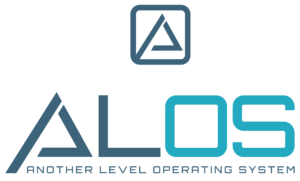
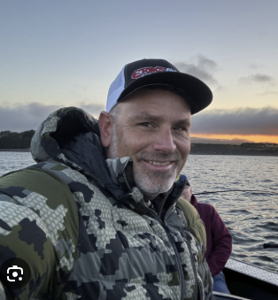

From CEO to Chief Belief Officer: How a Leader’s Belief Powers the System
When CEOs step back, belief fades. Learn how shifting from CEO to Chief Belief Officer keeps culture, managers, and growth systems energized.
ReadOrganic growth · Distribution & B2B services
I work with CEOs of distribution and B2B service companies to grow revenue from the customers and people they already have. Just good habits, practiced every week.

The argument
Organic growth is what a leadership team does every week, not what it decides once a year.
Strategy is rarely the problem. Most companies I meet already have a plan that would work. What they don’t have is a team that does the plan when the quarter is busy, the customer is upset, or the CEO is out of the room.
Eupraxis is the Greek word for good practice: doing the right thing, well, as a habit. Organic growth is exactly that. It is a small set of behaviors your people repeat every week with the customers, referrals, and relationships you have already earned.
It is also the cheapest growth there is. Your customers already trust you. They will buy more, buy sooner, and introduce you to others, but only if someone asks. In most companies, the revenue is already in the building. It just isn’t being asked for.
My job is to make the asking systematic: a mission the team believes in, a mindset that treats the ask as a service, and mechanics that put the right conversation on the calendar every week. Then I stay until it holds.

About me
I founded Eupraxis Consulting to help leaders grow companies without buying growth. My clients run distribution businesses and B2B service firms that are already established, usually with a sales team, long customer relationships, and a plateau they can’t explain.
I’m a visualizer. Most of my best work happens standing up, marker in hand, drawing the relationship between what a team believes and what it does on a Wednesday afternoon. That drawing usually becomes the operating rhythm the company runs on for years.
I didn’t start in consulting. I started inside operating companies, responsible for the number, watching smart plans die quietly in the gap between the strategy meeting and the sales floor.
The pattern was always the same. Leadership set a goal. The team agreed. Then the week happened, and the behavior that would have moved the number never got scheduled, never got measured, and never got recognized. Nobody was lazy. Nobody was wrong. The habit simply wasn’t there.
That is what pulled me toward the idea of eupraxia: the Greek notion that virtue is a practice, not a belief. You are what you repeatedly do. A company is too. So I built a practice around installing the habits of organic growth into leadership teams, and staying long enough to watch them hold under pressure.
How the work runs
Organic growth isn’t a campaign. It is a cycle a leadership team runs until it becomes the way the company works. Here is the version I draw for every client.
Why this company deserves more of its customers’ business. Written plainly, agreed by the leadership team, and said out loud often enough that the sales floor can repeat it.
“What are we actually for?”The belief that asking a customer for more is a service, not an imposition. Most sales teams don’t have a skill problem. They have a permission problem, and it starts with their managers.
“Do we believe we’re helping?”The weekly rhythm: which conversations happen, who has them, how they’re counted, and where the wins get recognized. Simple enough to survive a bad month.
“What happens every week?”Engagement shape
I work with one leadership team at a time, in person or on video, at a cadence the company can sustain. The goal is for the habits to hold without me, not to create a dependency.
Who this is for
Success stories
Two or three sentences on what the company looked like when Craig arrived, what habit was installed, and what changed. Real client details to be added once results are confirmed.
Two or three sentences on what the company looked like when Craig arrived, what habit was installed, and what changed. Real client details to be added once results are confirmed.
Two or three sentences on what the company looked like when Craig arrived, what habit was installed, and what changed. Real client details to be added once results are confirmed.
Working with Craig has been transformative for me as a leader. He challenged me to rethink how I approached growth and team development, which has led to incredible breakthroughs.Matt B.Founder & CEO, Biodynamic
Craig has an exceptional talent for simplifying complex problems and helping me focus on what’s most impactful. His calm, steady guidance has helped me lead my team with greater clarity and confidence.Karen W.Founder & CEO, Northwest Enforcement
Craig quickly became one of my most trusted advisors. He has a way of cutting through the noise and helping me focus on what matters most.

Erik B.CEO, Dagmar ConstructionSpeaking & media
Keynotes, leadership offsites, industry associations, and podcasts. Always with a whiteboard if the room has one.
Why most growth plans die in the ordinary week, and the three habits that keep them alive.
How distribution and service companies grow 15 to 30 percent from the customers they already have.
Why the front-line manager, not the CEO or the rep, decides whether a growth system works.
What leaders actually control: the belief that shows up in the room when they aren’t there.
Latest thinking
When CEOs step back, belief fades. Learn how shifting from CEO to Chief Belief Officer keeps culture, managers, and growth systems energized.
ReadWhy accountability fails when it shows up too late — and how manager accountability, rhythm, and weekly conversation create predictable performance.
ReadA proactive culture doesn’t happen by accident. Discover how managers turn belief into a weekly rhythm that keeps teams aligned and consistently growing.
ReadNext step
Tell me a little about your company and what growth has looked like lately. I’ll reply personally, usually within a business day, and we can decide together whether a conversation makes sense.
Prefer email? craig@eupraxisconsulting.com